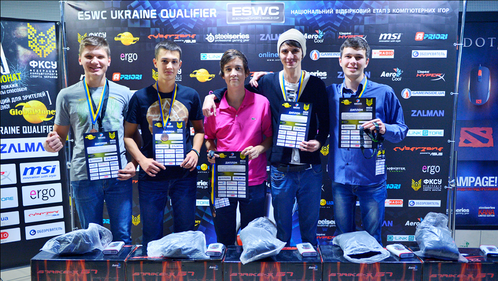

s1mple
Oleksandr "s1mple" Kostyljev (born October 2, 1997) is a Ukrainian professional Counter-Strike: Global Offensive player who plays for Natus Vincere as the AWPer. Widely considered as one of the greatest and most accomplished CS:GO players of all time, he has won a record 21 HLTV MVP medals, a Major and an Intel Grand Slam trophy, among other numerous S-Tier trophies, and has been crowned as the best player of 2018, 2021, and 2022, and a runner-up for the best player of 2019 and 2020.

У 2013 році s1mple почав свою кар'єру в CS:GO з командою "LAN DODGERS", яка зайняла 5-6 місце на турнірі "Techlabs Cup Ukraine 2013". Але він швидко привернув увагу інших команд своїм талантом і перейшов до "KerchNET", де зіграв на турнірі "DreamHack Winter 2013".
У 2014 році s1mple почав грати за команду "ACe", яка зайняла 3-4 місце на турнірі "StarSeries IX". Пізніше він перейшов до команди "HellRaisers", де разом з Дмитром "AdreN" Костенко добився успіхів на турнірах "StarSeries XI" та "Gfinity G3".

У 2015 році s1mple став грати за команду "Flipsid3 Tactics". Він проявив себе як один із кращих гравців світу та допоміг команді зайняти 3-4 місце на турнірі "ESL One Katowice 2015". Також він виграв турнір "CEVO Season 7: Professional Division - Europe" та зайняв 2-е місце на турнірі "StarSeries XII".
У 2016 році s1mple приєднався до команди "Natus Vincere" (Na'Vi). З цією командою він досяг своїх найвищих успіхів, зайнявши перше місце на турнірах "StarSeries XIV", "ESL One New York 2016", "StarLadder i-League StarSeries Season 2", "StarSeries i-League Season 3" та "CS:GO Asia Championship 2016". Він також отримав нагороду "MVP" на кількох турнірах.